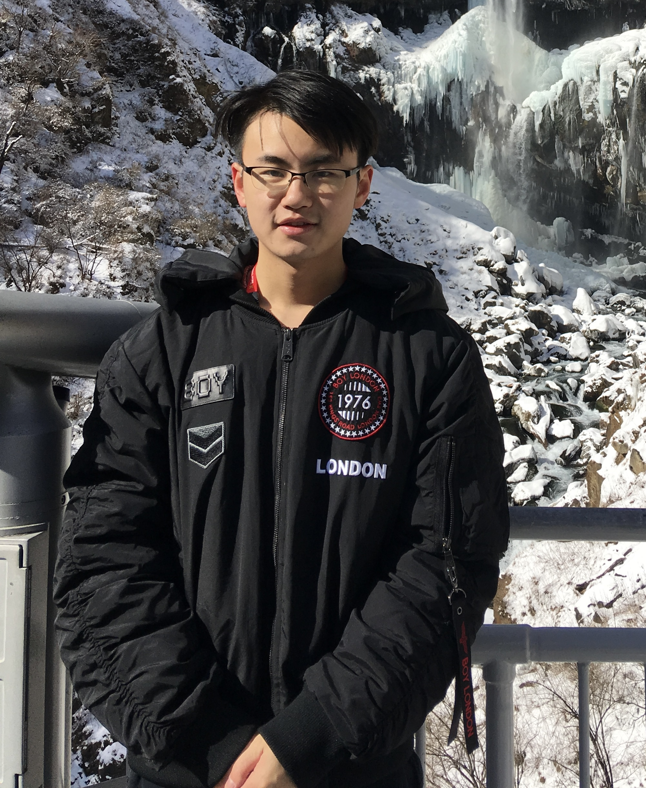

|  | Yuxuan Zhao, Ph.D. Student |
I am a Ph.D. candidate at Department of Computer Science and Engineering, The Chinese University of Hong Kong (CUHK), under the supervision of Prof. Bei Yu since Fall 2021. Previously, I received my B.Eng. in Information Engineering at Zhejiang University (ZJU).
Machine Learning in EDA
VLSI Placement
Hardware/Algorithm Co-Optimization
[J2] Yuxuan Zhao*, Peiyu Liao*, Siting Liu, Jiaxi Jiang, Yibo Lin, Bei Yu, “Analytical Heterogeneous Die-to-Die 3D Placement with Macros”, IEEE Transactions on Computer-Aided Design of Integrated Circuits and Systems (TCAD), 2024.
[J1] Peiyu Liao*, Yuxuan Zhao*, Dawei Guo, Yibo Lin, Bei Yu, “Analytical Die-to-Die 3D Placement with Bistratal Wirelength Model and GPU Acceleration”, IEEE Transactions on Computer-Aided Design of Integrated Circuits and Systems (TCAD), 2023.
[C3] Yuxuan Zhao, Qi Sun, Zhuolun He, Yang Bai, Bei Yu, “AutoGraph: Optimizing DNN Computation Graph for Parallel GPU Kernel Execution”, AAAI Conference on Artificial Intelligence (AAAI), Feb. 7–14, 2023. (Oral)
[C2] Qi Sun, Xinyun Zhang, Hao Geng, Yuxuan Zhao, Yang Bai, Haisheng Zheng, Bei Yu, “GTuner: Tuning DNN Computations on GPU via Graph Attention Network”, ACM/IEEE Design Automation Conference (DAC), San Francisco, CA, Jul. 10–14, 2022.
[C1] Haoyu Yang, Kit Fung, Yuxuan Zhao, Yibo Lin, Bei Yu, “Mixed-Cell-Height Legalization on CPU-GPU Heterogeneous Systems”, IEEE/ACM Proceedings Design, Automation and Test in Europe (DATE), Mar. 14–23, 2022.
3rd Place Award in CAD Contest ICCAD 2022
Hong Kong PhD Fellowship, CUHK, 2021
First-Class Scholarship for Outstanding Merits, ZJU, 2017, 2018, 2019
National Scholarship, ZJU, 2017